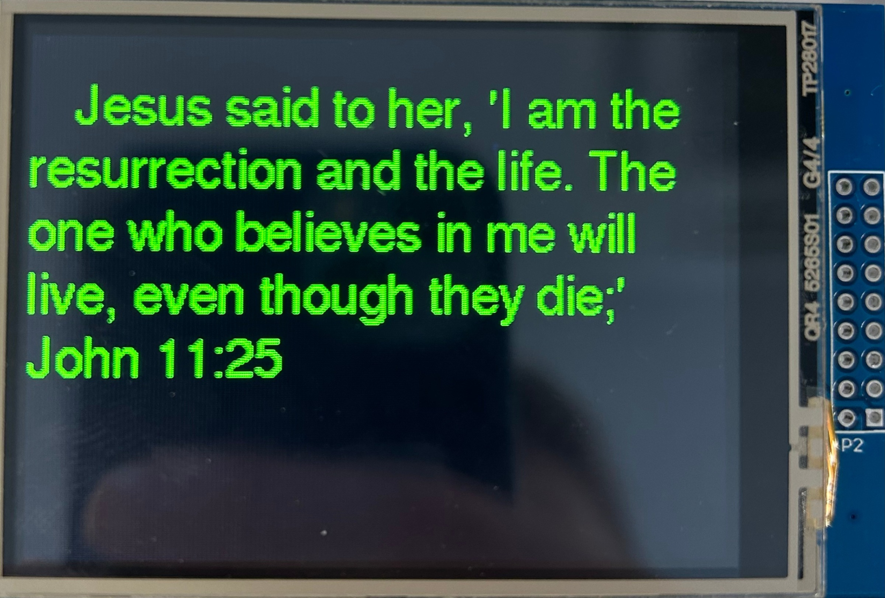
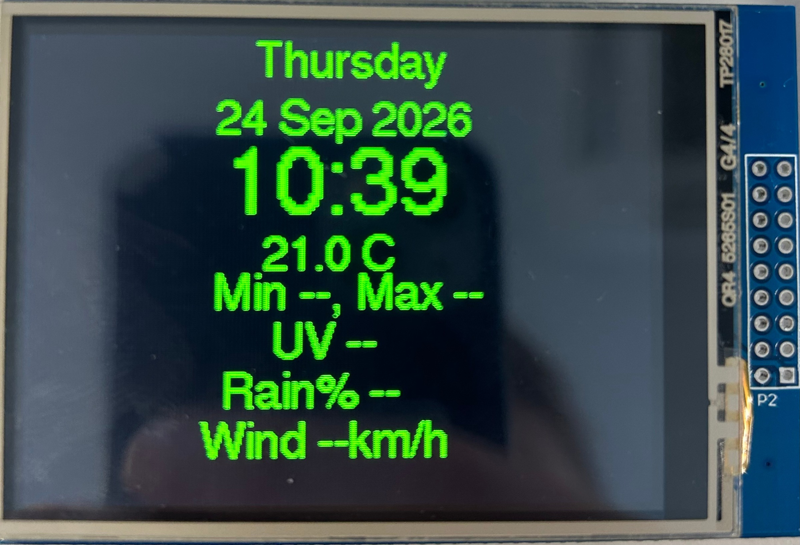
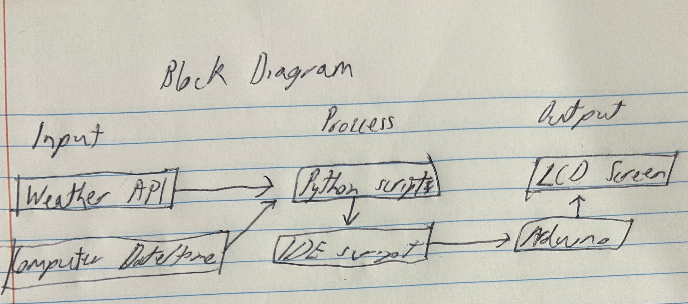

In this project, we had to create a display on an LCD screen, linking it with an arduino, which is linked to python script, which is linked to my computer's terminal. It has been the hardest challenge yet, and I already know that it's only going to get harder from here.



Challenges
This project was incredibly challenging. I had barely used arduino before, never used python, and
considered terminal some sort of "techy nerd magic". Through so many different tutorials,
troubleshooting, and scanning of my code for typos, I finally finished and... it worked? Almost
exactly how I wanted it, my LCD screen showed the time, day, date, temperature, and would flick to a
random bible verse every few seconds, and then go back! It was close, and there were a lot of
struggles, such as errors in printing the time, but in the end, I got there. Just don't mention the
random second time that pops up every so often.
I also almost started a cult, but that's a story for another day...